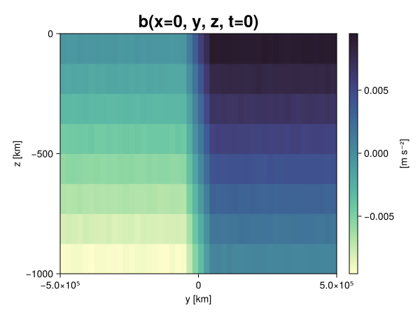
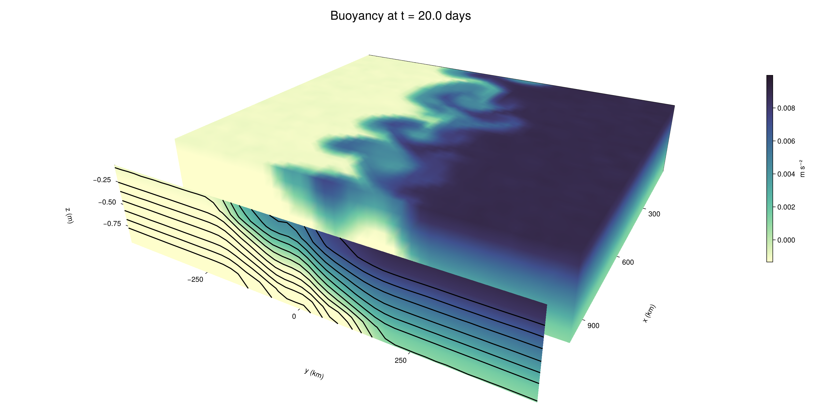

Baroclinic adjustment
In this example, we simulate the evolution and equilibration of a baroclinically unstable front.
Install dependencies
First let's make sure we have all required packages installed.
using Pkg
pkg"add Oceananigans, CairoMakie"using Oceananigans
using Oceananigans.UnitsGrid
We use a three-dimensional channel that is periodic in the x direction:
Lx = 1000kilometers # east-west extent [m]
Ly = 1000kilometers # north-south extent [m]
Lz = 1kilometers # depth [m]
grid = RectilinearGrid(size = (48, 48, 8),
x = (0, Lx),
y = (-Ly/2, Ly/2),
z = (-Lz, 0),
topology = (Periodic, Bounded, Bounded))48×48×8 RectilinearGrid{Float64, Periodic, Bounded, Bounded} on CPU with 3×3×3 halo
├── Periodic x ∈ [0.0, 1.0e6) regularly spaced with Δx=20833.3
├── Bounded y ∈ [-500000.0, 500000.0] regularly spaced with Δy=20833.3
└── Bounded z ∈ [-1000.0, 0.0] regularly spaced with Δz=125.0Model
We built a HydrostaticFreeSurfaceModel with an ImplicitFreeSurface solver. Regarding Coriolis, we use a beta-plane centered at 45° South.
model = HydrostaticFreeSurfaceModel(; grid,
coriolis = BetaPlane(latitude = -45),
buoyancy = BuoyancyTracer(),
tracers = :b,
momentum_advection = WENO(),
tracer_advection = WENO())HydrostaticFreeSurfaceModel{CPU, RectilinearGrid}(time = 0 seconds, iteration = 0)
├── grid: 48×48×8 RectilinearGrid{Float64, Periodic, Bounded, Bounded} on CPU with 3×3×3 halo
├── timestepper: QuasiAdamsBashforth2TimeStepper
├── tracers: b
├── closure: Nothing
├── buoyancy: BuoyancyTracer with ĝ = NegativeZDirection()
├── free surface: ImplicitFreeSurface with gravitational acceleration 9.80665 m s⁻²
│ └── solver: FFTImplicitFreeSurfaceSolver
├── advection scheme:
│ ├── momentum: WENO reconstruction order 5
│ └── b: WENO reconstruction order 5
└── coriolis: BetaPlane{Float64}We start our simulation from rest with a baroclinically unstable buoyancy distribution. We use ramp(y, Δy), defined below, to specify a front with width Δy and horizontal buoyancy gradient M². We impose the front on top of a vertical buoyancy gradient N² and a bit of noise.
"""
ramp(y, Δy)
Linear ramp from 0 to 1 between -Δy/2 and +Δy/2.
For example:
```
y < -Δy/2 => ramp = 0
-Δy/2 < y < -Δy/2 => ramp = y / Δy
y > Δy/2 => ramp = 1
```
"""
ramp(y, Δy) = min(max(0, y/Δy + 1/2), 1)
N² = 1e-5 # [s⁻²] buoyancy frequency / stratification
M² = 1e-7 # [s⁻²] horizontal buoyancy gradient
Δy = 100kilometers # width of the region of the front
Δb = Δy * M² # buoyancy jump associated with the front
ϵb = 1e-2 * Δb # noise amplitude
bᵢ(x, y, z) = N² * z + Δb * ramp(y, Δy) + ϵb * randn()
set!(model, b=bᵢ)Let's visualize the initial buoyancy distribution.
using CairoMakie
# Build coordinates with units of kilometers
x, y, z = 1e-3 .* nodes(grid, (Center(), Center(), Center()))
b = model.tracers.b
fig, ax, hm = heatmap(view(b, 1, :, :),
colormap = :deep,
axis = (xlabel = "y [km]",
ylabel = "z [km]",
title = "b(x=0, y, z, t=0)",
titlesize = 24))
Colorbar(fig[1, 2], hm, label = "[m s⁻²]")
fig
Simulation
Now let's build a Simulation.
simulation = Simulation(model, Δt=20minutes, stop_time=20days)Simulation of HydrostaticFreeSurfaceModel{CPU, RectilinearGrid}(time = 0 seconds, iteration = 0)
├── Next time step: 20 minutes
├── Elapsed wall time: 0 seconds
├── Wall time per iteration: NaN days
├── Stop time: 20 days
├── Stop iteration : Inf
├── Wall time limit: Inf
├── Callbacks: OrderedDict with 4 entries:
│ ├── stop_time_exceeded => Callback of stop_time_exceeded on IterationInterval(1)
│ ├── stop_iteration_exceeded => Callback of stop_iteration_exceeded on IterationInterval(1)
│ ├── wall_time_limit_exceeded => Callback of wall_time_limit_exceeded on IterationInterval(1)
│ └── nan_checker => Callback of NaNChecker for u on IterationInterval(100)
├── Output writers: OrderedDict with no entries
└── Diagnostics: OrderedDict with no entriesWe add a TimeStepWizard callback to adapt the simulation's time-step,
conjure_time_step_wizard!(simulation, IterationInterval(20), cfl=0.2, max_Δt=20minutes)Also, we add a callback to print a message about how the simulation is going,
using Printf
wall_clock = Ref(time_ns())
function print_progress(sim)
u, v, w = model.velocities
progress = 100 * (time(sim) / sim.stop_time)
elapsed = (time_ns() - wall_clock[]) / 1e9
@printf("[%05.2f%%] i: %d, t: %s, wall time: %s, max(u): (%6.3e, %6.3e, %6.3e) m/s, next Δt: %s\n",
progress, iteration(sim), prettytime(sim), prettytime(elapsed),
maximum(abs, u), maximum(abs, v), maximum(abs, w), prettytime(sim.Δt))
wall_clock[] = time_ns()
return nothing
end
add_callback!(simulation, print_progress, IterationInterval(100))Diagnostics/Output
Here, we save the buoyancy, $b$, at the edges of our domain as well as the zonal ($x$) average of buoyancy.
u, v, w = model.velocities
ζ = ∂x(v) - ∂y(u)
B = Average(b, dims=1)
U = Average(u, dims=1)
V = Average(v, dims=1)
filename = "baroclinic_adjustment"
save_fields_interval = 0.5day
slicers = (east = (grid.Nx, :, :),
north = (:, grid.Ny, :),
bottom = (:, :, 1),
top = (:, :, grid.Nz))
for side in keys(slicers)
indices = slicers[side]
simulation.output_writers[side] = JLD2OutputWriter(model, (; b, ζ);
filename = filename * "_$(side)_slice",
schedule = TimeInterval(save_fields_interval),
overwrite_existing = true,
indices)
end
simulation.output_writers[:zonal] = JLD2OutputWriter(model, (; b=B, u=U, v=V);
filename = filename * "_zonal_average",
schedule = TimeInterval(save_fields_interval),
overwrite_existing = true)JLD2OutputWriter scheduled on TimeInterval(12 hours):
├── filepath: ./baroclinic_adjustment_zonal_average.jld2
├── 3 outputs: (b, u, v)
├── array type: Array{Float64}
├── including: [:grid, :coriolis, :buoyancy, :closure]
├── file_splitting: NoFileSplitting
└── file size: 30.7 KiBNow we're ready to run.
@info "Running the simulation..."
run!(simulation)
@info "Simulation completed in " * prettytime(simulation.run_wall_time)[ Info: Running the simulation...
[ Info: Initializing simulation...
[00.00%] i: 0, t: 0 seconds, wall time: 20.199 seconds, max(u): (0.000e+00, 0.000e+00, 0.000e+00) m/s, next Δt: 20 minutes
[ Info: ... simulation initialization complete (22.098 seconds)
[ Info: Executing initial time step...
[ Info: ... initial time step complete (17.290 seconds).
[06.94%] i: 100, t: 1.389 days, wall time: 31.298 seconds, max(u): (1.233e-01, 1.180e-01, 1.641e-03) m/s, next Δt: 20 minutes
[13.89%] i: 200, t: 2.778 days, wall time: 895.861 ms, max(u): (2.189e-01, 1.742e-01, 1.793e-03) m/s, next Δt: 20 minutes
[20.83%] i: 300, t: 4.167 days, wall time: 808.873 ms, max(u): (2.913e-01, 2.109e-01, 1.617e-03) m/s, next Δt: 20 minutes
[27.78%] i: 400, t: 5.556 days, wall time: 854.963 ms, max(u): (3.507e-01, 2.931e-01, 1.693e-03) m/s, next Δt: 20 minutes
[34.72%] i: 500, t: 6.944 days, wall time: 737.380 ms, max(u): (4.373e-01, 4.093e-01, 1.804e-03) m/s, next Δt: 20 minutes
[41.67%] i: 600, t: 8.333 days, wall time: 872.678 ms, max(u): (5.338e-01, 6.634e-01, 1.888e-03) m/s, next Δt: 20 minutes
[48.61%] i: 700, t: 9.722 days, wall time: 773.787 ms, max(u): (6.848e-01, 9.622e-01, 2.789e-03) m/s, next Δt: 20 minutes
[55.56%] i: 800, t: 11.111 days, wall time: 838.284 ms, max(u): (1.030e+00, 1.187e+00, 3.745e-03) m/s, next Δt: 20 minutes
[62.50%] i: 900, t: 12.500 days, wall time: 793.432 ms, max(u): (1.320e+00, 1.270e+00, 4.649e-03) m/s, next Δt: 20 minutes
[69.44%] i: 1000, t: 13.889 days, wall time: 872.811 ms, max(u): (1.490e+00, 1.175e+00, 4.490e-03) m/s, next Δt: 20 minutes
[76.39%] i: 1100, t: 15.278 days, wall time: 866.156 ms, max(u): (1.456e+00, 1.167e+00, 3.787e-03) m/s, next Δt: 20 minutes
[83.33%] i: 1200, t: 16.667 days, wall time: 845.527 ms, max(u): (1.370e+00, 1.181e+00, 4.342e-03) m/s, next Δt: 20 minutes
[90.28%] i: 1300, t: 18.056 days, wall time: 777.663 ms, max(u): (1.314e+00, 1.169e+00, 4.294e-03) m/s, next Δt: 20 minutes
[97.22%] i: 1400, t: 19.444 days, wall time: 698.647 ms, max(u): (1.403e+00, 1.254e+00, 3.569e-03) m/s, next Δt: 20 minutes
[ Info: Simulation is stopping after running for 54.211 seconds.
[ Info: Simulation time 20 days equals or exceeds stop time 20 days.
[ Info: Simulation completed in 54.244 seconds
Visualization
All that's left is to make a pretty movie. Actually, we make two visualizations here. First, we illustrate how to make a 3D visualization with Makie's Axis3 and Makie.surface. Then we make a movie in 2D. We use CairoMakie in this example, but note that using GLMakie is more convenient on a system with OpenGL, as figures will be displayed on the screen.
using CairoMakieThree-dimensional visualization
We load the saved buoyancy output on the top, north, and east surface as FieldTimeSerieses.
filename = "baroclinic_adjustment"
sides = keys(slicers)
slice_filenames = NamedTuple(side => filename * "_$(side)_slice.jld2" for side in sides)
b_timeserieses = (east = FieldTimeSeries(slice_filenames.east, "b"),
north = FieldTimeSeries(slice_filenames.north, "b"),
top = FieldTimeSeries(slice_filenames.top, "b"))
B_timeseries = FieldTimeSeries(filename * "_zonal_average.jld2", "b")
times = B_timeseries.times
grid = B_timeseries.grid48×48×8 RectilinearGrid{Float64, Periodic, Bounded, Bounded} on CPU with 3×3×3 halo
├── Periodic x ∈ [0.0, 1.0e6) regularly spaced with Δx=20833.3
├── Bounded y ∈ [-500000.0, 500000.0] regularly spaced with Δy=20833.3
└── Bounded z ∈ [-1000.0, 0.0] regularly spaced with Δz=125.0We build the coordinates. We rescale horizontal coordinates to kilometers.
xb, yb, zb = nodes(b_timeserieses.east)
xb = xb ./ 1e3 # convert m -> km
yb = yb ./ 1e3 # convert m -> km
Nx, Ny, Nz = size(grid)
x_xz = repeat(x, 1, Nz)
y_xz_north = y[end] * ones(Nx, Nz)
z_xz = repeat(reshape(z, 1, Nz), Nx, 1)
x_yz_east = x[end] * ones(Ny, Nz)
y_yz = repeat(y, 1, Nz)
z_yz = repeat(reshape(z, 1, Nz), grid.Ny, 1)
x_xy = x
y_xy = y
z_xy_top = z[end] * ones(grid.Nx, grid.Ny)Then we create a 3D axis. We use zonal_slice_displacement to control where the plot of the instantaneous zonal average flow is located.
fig = Figure(size = (1600, 800))
zonal_slice_displacement = 1.2
ax = Axis3(fig[2, 1],
aspect=(1, 1, 1/5),
xlabel = "x (km)",
ylabel = "y (km)",
zlabel = "z (m)",
xlabeloffset = 100,
ylabeloffset = 100,
zlabeloffset = 100,
limits = ((x[1], zonal_slice_displacement * x[end]), (y[1], y[end]), (z[1], z[end])),
elevation = 0.45,
azimuth = 6.8,
xspinesvisible = false,
zgridvisible = false,
protrusions = 40,
perspectiveness = 0.7)Axis3()We use data from the final savepoint for the 3D plot. Note that this plot can easily be animated by using Makie's Observable. To dive into Observables, check out Makie.jl's Documentation.
n = length(times)41Now let's make a 3D plot of the buoyancy and in front of it we'll use the zonally-averaged output to plot the instantaneous zonal-average of the buoyancy.
b_slices = (east = interior(b_timeserieses.east[n], 1, :, :),
north = interior(b_timeserieses.north[n], :, 1, :),
top = interior(b_timeserieses.top[n], :, :, 1))
# Zonally-averaged buoyancy
B = interior(B_timeseries[n], 1, :, :)
clims = 1.1 .* extrema(b_timeserieses.top[n][:])
kwargs = (colorrange=clims, colormap=:deep, shading=NoShading)
surface!(ax, x_yz_east, y_yz, z_yz; color = b_slices.east, kwargs...)
surface!(ax, x_xz, y_xz_north, z_xz; color = b_slices.north, kwargs...)
surface!(ax, x_xy, y_xy, z_xy_top; color = b_slices.top, kwargs...)
sf = surface!(ax, zonal_slice_displacement .* x_yz_east, y_yz, z_yz; color = B, kwargs...)
contour!(ax, y, z, B; transformation = (:yz, zonal_slice_displacement * x[end]),
levels = 15, linewidth = 2, color = :black)
Colorbar(fig[2, 2], sf, label = "m s⁻²", height = Relative(0.4), tellheight=false)
title = "Buoyancy at t = " * string(round(times[n] / day, digits=1)) * " days"
fig[1, 1:2] = Label(fig, title; fontsize = 24, tellwidth = false, padding = (0, 0, -120, 0))
rowgap!(fig.layout, 1, Relative(-0.2))
colgap!(fig.layout, 1, Relative(-0.1))
save("baroclinic_adjustment_3d.png", fig)
Two-dimensional movie
We make a 2D movie that shows buoyancy $b$ and vertical vorticity $ζ$ at the surface, as well as the zonally-averaged zonal and meridional velocities $U$ and $V$ in the $(y, z)$ plane. First we load the FieldTimeSeries and extract the additional coordinates we'll need for plotting
ζ_timeseries = FieldTimeSeries(slice_filenames.top, "ζ")
U_timeseries = FieldTimeSeries(filename * "_zonal_average.jld2", "u")
B_timeseries = FieldTimeSeries(filename * "_zonal_average.jld2", "b")
V_timeseries = FieldTimeSeries(filename * "_zonal_average.jld2", "v")
xζ, yζ, zζ = nodes(ζ_timeseries)
yv = ynodes(V_timeseries)
xζ = xζ ./ 1e3 # convert m -> km
yζ = yζ ./ 1e3 # convert m -> km
yv = yv ./ 1e3 # convert m -> km49-element Vector{Float64}:
-500.0
-479.1666666666667
-458.3333333333333
-437.5
-416.6666666666667
-395.8333333333333
-375.0
-354.1666666666667
-333.3333333333333
-312.5
-291.6666666666667
-270.8333333333333
-250.0
-229.16666666666666
-208.33333333333334
-187.5
-166.66666666666666
-145.83333333333334
-125.0
-104.16666666666667
-83.33333333333333
-62.5
-41.666666666666664
-20.833333333333332
0.0
20.833333333333332
41.666666666666664
62.5
83.33333333333333
104.16666666666667
125.0
145.83333333333334
166.66666666666666
187.5
208.33333333333334
229.16666666666666
250.0
270.8333333333333
291.6666666666667
312.5
333.3333333333333
354.1666666666667
375.0
395.8333333333333
416.6666666666667
437.5
458.3333333333333
479.1666666666667
500.0Next, we set up a plot with 4 panels. The top panels are large and square, while the bottom panels get a reduced aspect ratio through rowsize!.
set_theme!(Theme(fontsize=24))
fig = Figure(size=(1800, 1000))
axb = Axis(fig[1, 2], xlabel="x (km)", ylabel="y (km)", aspect=1)
axζ = Axis(fig[1, 3], xlabel="x (km)", ylabel="y (km)", aspect=1, yaxisposition=:right)
axu = Axis(fig[2, 2], xlabel="y (km)", ylabel="z (m)")
axv = Axis(fig[2, 3], xlabel="y (km)", ylabel="z (m)", yaxisposition=:right)
rowsize!(fig.layout, 2, Relative(0.3))To prepare a plot for animation, we index the timeseries with an Observable,
n = Observable(1)
b_top = @lift interior(b_timeserieses.top[$n], :, :, 1)
ζ_top = @lift interior(ζ_timeseries[$n], :, :, 1)
U = @lift interior(U_timeseries[$n], 1, :, :)
V = @lift interior(V_timeseries[$n], 1, :, :)
B = @lift interior(B_timeseries[$n], 1, :, :)Observable([-0.009423320364835376 -0.008122145335437057 -0.006892105647491255 -0.005633427233809764 -0.004378653595215988 -0.0031050889581752845 -0.0018827432951256974 -0.0006231942803586734; -0.009379883497713822 -0.008111362370564089 -0.006870657019135668 -0.005626786201359889 -0.0043684068492594605 -0.0031131999833796374 -0.0018864062192723262 -0.0006171977822294322; -0.009353136373379577 -0.008135951033919106 -0.0068659435614852994 -0.005653789858937904 -0.00436136509757679 -0.003129878244681711 -0.0018688451321065343 -0.0006394086942047135; -0.009390057755477419 -0.008104598013319675 -0.006846117738414553 -0.005627978718608726 -0.004372046413429205 -0.0030994551509822142 -0.0018952770885524682 -0.0006272760099783279; -0.009371142723913014 -0.00811014251538593 -0.006871468595807101 -0.00560765848404354 -0.004389105196027999 -0.0031356233659153945 -0.0018669848242363982 -0.0006151779459324698; -0.009385915398828685 -0.00811163603070276 -0.006881523601970127 -0.005622788330987723 -0.004380715384244146 -0.00313193125748402 -0.001856972109207754 -0.0006322778335905862; -0.009367039787860555 -0.008093210218061996 -0.006873874735393748 -0.005641705242996976 -0.004377389697123444 -0.0031208225698390094 -0.0018720678089509727 -0.0006451481685006074; -0.009368330766084029 -0.008108591077330711 -0.00687090979232518 -0.0055995862160986695 -0.00436601631396251 -0.003114553899174713 -0.0018944825627112277 -0.0006021837724684982; -0.009366567917030366 -0.00810628254649722 -0.006886606327770006 -0.005643824812706556 -0.004385067517148139 -0.00315591889755459 -0.001885304221619738 -0.0006304475194587262; -0.009405464213197764 -0.008110812016844942 -0.006897920410732984 -0.005592605225747996 -0.004368582890513007 -0.0031263723949694483 -0.0018576475719633435 -0.0006193187044418797; -0.009361623727846121 -0.008121956632743772 -0.006874926710744386 -0.005630721756666544 -0.004393074026188596 -0.0031295176229492517 -0.001871825331467294 -0.0006263435850142395; -0.009352524542830634 -0.00813959453167864 -0.006859576931297728 -0.00561246531319893 -0.0043836033961773485 -0.003104748876175234 -0.0018789164493451442 -0.0006182494998926897; -0.009364249503615687 -0.008120644551604952 -0.006886316488910031 -0.005619154391293009 -0.004353162821710827 -0.003114091824851876 -0.0018675921131457178 -0.0006316599429090493; -0.009356357035755549 -0.008128889184228693 -0.006875614558641781 -0.005643565406155917 -0.004378324946891235 -0.0031331809085297945 -0.0018797655372649544 -0.0006333071901112774; -0.009396477311243396 -0.008112599655739341 -0.0068767450651679475 -0.00560605139643038 -0.004378084600536565 -0.0031218772426598236 -0.0018881040108203729 -0.0006261737820383009; -0.009399422201322111 -0.008151197530185542 -0.006885335398999141 -0.005637681039570697 -0.004349037577331176 -0.0031211124424935072 -0.0018333851562766072 -0.0005971622155187765; -0.009361423820481494 -0.008146588112989068 -0.006870278052085861 -0.0056342341252165725 -0.004371612737117912 -0.0031370634993884328 -0.0018505253017899314 -0.0006443305240446609; -0.00936330240977225 -0.008135032524254819 -0.006889021961511649 -0.00563167356661617 -0.004370104122986584 -0.0031394188931054483 -0.0018938788795103956 -0.000608924080047001; -0.009390930770760591 -0.008114389712856598 -0.006873764012483157 -0.005638670048008862 -0.004391938915127976 -0.003159630089356012 -0.0018838016648913016 -0.0006317004235410804; -0.009362026634877408 -0.008126707413418519 -0.006898711601216661 -0.005646965951268582 -0.004378292183872186 -0.0031287742737396078 -0.0018971185415569813 -0.0006378878084131496; -0.00939361259948709 -0.008122604413265273 -0.0068728232217297736 -0.0056460968290979845 -0.004365986815390529 -0.003103109536261089 -0.0018915318810288646 -0.0006361014328445474; -0.009384309366054963 -0.008123179413736947 -0.006871685823767998 -0.00560895829571632 -0.004364396386017908 -0.0031363980447698444 -0.001844096757516518 -0.0006156412425995876; -0.007504450407823882 -0.006257365360053075 -0.004987570044644489 -0.0037592251949451114 -0.002493518499314408 -0.001256455790217572 1.6070752401976636e-6 0.0012705363992008575; -0.005423398660474235 -0.004171118601922655 -0.002930631196147686 -0.0016620224360422789 -0.0004192478852707789 0.0008462297171771081 0.0020914793808279124 0.0033192000387471075; -0.0033421013526839863 -0.002089383376047931 -0.0008288551860966298 0.0004296635120360384 0.0016553836262612823 0.002928635872586421 0.004155859786872871 0.005433977836913603; -0.001254886709293937 8.748136636299636e-6 0.0012505700429078493 0.0024735733251039452 0.0037217463920255905 0.005009754451340172 0.006231736321147374 0.007509185968000057; 0.0006435364006100631 0.0018504633193510672 0.0031182518778902248 0.004350136615558372 0.005636451068569322 0.006881281495440635 0.008115991177509935 0.00937216649065435; 0.000633027134574244 0.001870375450656567 0.003133152647803774 0.004381220457065969 0.005647035479762221 0.006855681091755291 0.008108537361818444 0.009382959056423532; 0.0006114683319971794 0.0018764791055494764 0.0031266658412813127 0.004370740740191418 0.005637855402133782 0.006868004947612726 0.00812407054660167 0.009354612812977697; 0.0006433487046834485 0.0018732193912604936 0.0031288454200527126 0.004385042198915403 0.005608067794985042 0.006863105280808811 0.008147927938501763 0.009377762349898525; 0.000609921492885605 0.0018933884792664704 0.0031123592693477835 0.00439533374099919 0.005619104488825174 0.006864181932556792 0.008130253773074265 0.009372751806172662; 0.0006266258594897861 0.001871368476421351 0.0030812981914926825 0.004378455643236005 0.005632793463774369 0.0068646739245395395 0.008140455939323487 0.009340257064544609; 0.0006140177179126715 0.00188138962458511 0.00310111725554294 0.004384333093054853 0.00560912296624523 0.006866570195657823 0.008137776416330296 0.009368952331608726; 0.0006376116912445237 0.001861252897969454 0.0031205381725603544 0.0043826596124288825 0.005637654377313252 0.006883034294046885 0.008108351917325533 0.009346838354189773; 0.0006089878248143882 0.0018898358618615926 0.0031402526471972134 0.0043615037398956 0.005622555660504971 0.006911571992327818 0.00812479673902951 0.00937973530405346; 0.000618506271497489 0.0018775669091239883 0.003119572827067326 0.00437407785501084 0.005627647327397748 0.0069032401316285906 0.008101398281954776 0.009351989995814013; 0.0006241848937671038 0.001877611274292891 0.0030918125358788406 0.004397577401268366 0.005611132959629198 0.006882577500780844 0.008115705155326317 0.009377098091170762; 0.000618828587574249 0.0018869190097771688 0.0031276548465346134 0.00437285049883552 0.0056463563281077935 0.0068564278834500406 0.008090721084160585 0.00938401558693813; 0.0006129231569022012 0.001874503808270614 0.003106289290529548 0.004383227966067584 0.005635964459057279 0.006858584223244463 0.008113425641241854 0.00935911380878217; 0.000612838303847692 0.0018802446035185484 0.00313661121531073 0.004372810667195346 0.005645645250142438 0.006864847881522862 0.00810079671901577 0.009399364235032456; 0.00062837703387904 0.001893376531608755 0.0031211111277637455 0.00437778560148046 0.005647319975116958 0.006899849157312223 0.008137847247194246 0.009359082007472895; 0.0006465417204437095 0.0018828490937263735 0.0031170260644395424 0.004367274498787054 0.005609890540352558 0.006870612831090026 0.008138540257289722 0.009402442569356446; 0.0006181111885093498 0.0018786064251551503 0.003139714653348367 0.004379685358687358 0.005638992989924152 0.006886572874805934 0.008112088630272412 0.009381673043463145; 0.0006329874764769817 0.00188346824307732 0.0031328067224608105 0.004376636027521781 0.005622846987569499 0.006892658840267668 0.008142801484406282 0.00935503771767785; 0.0006179609561324661 0.001878896635124962 0.003153625972027216 0.004366077844301876 0.005618367609668751 0.0068840092052026266 0.00814275084437983 0.009351168341467115; 0.0006457159932849665 0.001879339988852811 0.003137779488363881 0.0043543978994658025 0.0056195161247816275 0.006853392971151247 0.00811982745737143 0.00940473878050705; 0.000628902776675719 0.0018624029176581213 0.0031425603554448736 0.004366182460246623 0.005628023331878289 0.006848927205832114 0.00812413165209054 0.009374119496199188; 0.0006353690856527403 0.0019023074916549448 0.0031279560464958244 0.004395804030568957 0.005618259900479647 0.00687926751104852 0.008140281140395252 0.009369948523350175])
and then build our plot:
hm = heatmap!(axb, xb, yb, b_top, colorrange=(0, Δb), colormap=:thermal)
Colorbar(fig[1, 1], hm, flipaxis=false, label="Surface b(x, y) (m s⁻²)")
hm = heatmap!(axζ, xζ, yζ, ζ_top, colorrange=(-5e-5, 5e-5), colormap=:balance)
Colorbar(fig[1, 4], hm, label="Surface ζ(x, y) (s⁻¹)")
hm = heatmap!(axu, yb, zb, U; colorrange=(-5e-1, 5e-1), colormap=:balance)
Colorbar(fig[2, 1], hm, flipaxis=false, label="Zonally-averaged U(y, z) (m s⁻¹)")
contour!(axu, yb, zb, B; levels=15, color=:black)
hm = heatmap!(axv, yv, zb, V; colorrange=(-1e-1, 1e-1), colormap=:balance)
Colorbar(fig[2, 4], hm, label="Zonally-averaged V(y, z) (m s⁻¹)")
contour!(axv, yb, zb, B; levels=15, color=:black)Finally, we're ready to record the movie.
frames = 1:length(times)
record(fig, filename * ".mp4", frames, framerate=8) do i
n[] = i
endThis page was generated using Literate.jl.